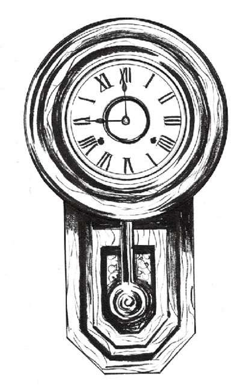

钟表创新继续飞速发展，但这一节介绍的这个创新却花了相当长时间才从梦想变为现实。
这个故事跟意大利博学者伽利略·伽利莱（Galileo Galilei，1564—1642）有关。伽利略被称为“观测天文学之父”“现代物理学之父”及“现代科学之父”。1582年的某一天，伽利略当时还只是一名医学院的学生，正在比萨大教堂做礼拜，悬挂在半空中的一盏青铜吊灯来回摆动引起了他的注意。伽利略利用自己的脉搏来计算吊灯摆动的时间，发现无论吊灯的摆幅是多大，每次摆动的间隔时间都是一样的，大概是9下或10下脉搏。于是他回到家做了大量实验，最后发现单摆的摆动速度与摆幅无关，但与摆长有关，摆绳越长，摆动越慢。
伽利略利用这一发现发明了便携式脉搏计，用于他的医学实践，并很快得到医学机构的认可。后来，伽利略发现还可以将单摆运用到钟表制造。1637年，他起草了制造世上第一座摆钟的计划，但最终却没有付诸实践。1649年，伽利略之子文森佐（Vincenzio）开始制造钟摆，遗憾的是，钟摆未制作成功文森佐便与世长辞。
1656年，来自荷兰的另一位博学者克里斯蒂安·惠更斯（Christiaan Huygens）真正实现了伽利略的想法，建造了历史上第一座摆钟。这座摆钟每日的误差不到1分钟，在当时已经算非常精准了。1675年，惠更斯还发明了用于怀表摆轮的螺旋平衡弹簧，极大地提高了表的精度。
惠更斯的摆钟自然是划时代的作品，但他使用的机轴擒纵器摆幅太大，因此影响了精度。1670年，新发明的锚形擒纵器大大降低了摆幅，而摆幅越小，时钟就越精确。锚形擒纵器迅速成为摆钟的标准擒纵器，但到底谁是发明者至今仍是个谜。钟表匠约瑟夫·尼布（Joseph Knibb）和威廉·克莱门特（William Clement），以及科学家罗伯特·胡克（Robert Hooke）都被认为是这一装置的发明者。

一个简单的摆钟
关于伽利略的5件趣事
除了伟大的单摆发明，伽利略在物理学、数学、天文学和哲学领域也做出了突出贡献。
（1）作为一名医学院学生和见习医生，他不仅发明了摆式脉搏计，还发明了温度计，成为体温计的先驱。
（2）他是佛罗伦萨著名艺术学校佛罗伦萨美术学院（Accademia delle Arti del Disegno）的讲师，教授透视学和明暗对照法，即著名画家卡拉瓦乔（Caravaggio）和伦勃朗（Rembrandt）在绘画中使用的光影效果。
（3）他改进了望远镜技术并利用自制望远镜不断观察，确认了金星的相位，还发现了最大的4颗木星卫星，后来这4颗卫星被命名为“伽利略卫星”。借助望远镜，他还观察到并研究了太阳黑子和银河系，而这些之前一直不被大众认同。 [4]
（4）他支持哥白尼（Copernican）“日心说”，即太阳是宇宙的中心而非地球。但他的学说遭到了天文学同行以及教会的反对。他被指控为“异端分子”，经审判后，因质疑权威，生命的最后15年他一直被软禁在家。1939年，罗马教皇庇护十二世（Pope Pius XII）称他为“最无畏的探索英雄”。1992年，教皇若望·保罗二世（Pope John Paul II）代表罗马天主教会为当年教廷审判伽利略事件正式道歉。
（5）伽利略还有很多其他成就。他发明了让火炮更精准的军用指南针、创造了复合显微镜、进行了第一个测量光速的实验，还提出了相对性原理，为后来的牛顿运动定律和爱因斯坦相对论奠定了基础。
钟表匠们将钟摆的摆幅不断缩小，很快就缩至“秒摆”，即每秒摆动一次。1680年，英国人威廉·克莱门特手工制作了一种利用秒摆驱动的又瘦又长的落地式大摆钟，这个钟后来又被人称为“老爷钟”。1690年左右，分针成为时钟标配。
据说“老爷钟”这个名字来源于19世纪70年代美国一首流行歌曲，歌名为“爷爷辈的古老大钟”（My Grandfather’s Clock ），由废奴主义者亨利·克莱·沃克（Henry Clay Work）写就。传说1875年作者去英国旅行时，被一间酒店内摆钟的动人故事感动而创作了这首歌。歌中那座钟位于英国约克郡的佐治酒店，一直以精准而闻名。酒店由两兄弟拥有和打理，其中一位过世后，摆钟便开始出现故障。当另一位也离世后，摆钟最终停止了运行。
在钟摆发明的推动下，1696年，第一个节拍器雏形也问世了。这个节拍器由法国音乐理论家艾蒂安·卢利（Etienne Loulié）设计，有可调整速度的摆杆，但不能发出声音，也没有让摆杆保持运动的擒纵器。
100多年后的1814年，德里希·尼古拉斯·温克尔（Dietrich Nikolaus Winkel）在荷兰发明了真正的节拍器。虽然是温克尔发明了节拍器，但另一个叫作约翰·马塞尔（Johann Maelzel）的人基于温克尔的设想又做了进一步完善，然后申请了专利，并于1816年开始批量生产节拍器。马塞尔将自己生产的节拍器命名为“马塞尔节拍器”，以免混淆。节拍器是用来帮助音乐家稳定节拍的工具，速度可任意调整，每分钟可以打40拍至208拍。